Portfolio Sietse
Beste Lezers,
Leuk dat jullie geinteresseerd zijn in mijn persoonlijk portfolio van de minor smart industrie. In dit portfolio neem ik jullie mee in de ervaring en kennis die ik heb opgedaan tijdens deze minor. De kennis is onder te verdelen in verschillende vakgebieden:
Per vakgebied wordt omschreven welke kennis ik heb opgedaan. Deze kennis is in de verschillende tabbladen terug te vinden. Veel leesplezier
Portfolio Smart Start
Week 1: Smart research: kruispunten
Voorbereiding
Gedurende de studie technische bedrijfskunde zijn verschillende thema’s behandelt die te maken hebben met smart industrie. Voor de eerste week is gevraagd wetenschappelijke inzichten te verkrijgen van verschillende thema’s. Om aan hoogwaardige kwaliteit bronnen te komen is een video bekeken waaruit het volgende is geleerd:
- Gebruik wetenschappelijke artikelen en geen sites of bronnen.
- Zorg dat de bron betrouwbaar is door te kijken naar de acteur en het aantal citaten.
- Kijk naar het jaartal om te verzekeren dat de bron nog actueel is (indien nodig).
- Gebruik zoekfuncties om specifieker te zoeken.
- Lees eerst de samenvatting om te kijken of het artikel nuttig is.
Door deze leerpunten kan ik specifieker gaan zoeken naar de thema’s en kijken welke informatie ik wil verkrijgen.
De studie technische bedrijfskunde heeft veel raakvlak met de minor smart industrie. Er is gekozen voor de volgende onderwerpen:
Industrie 4.0
Inmiddels is de vierde industriële revolutie aangebroken en hierin worden technologieën steeds belangrijker. Technische bedrijfskunde gaat over het verbeteren van processen en hierdoor past dit thema goed bij mijn studie. Hierbij betreft het nieuwe ontwikkelingen die toegepast kunnen worden binnen de industrie. Onderwerpen als IoT, big data, hyperautomatisering, AI, 5G, etc. gaan steeds belangrijker worden voor bedrijven. Deze technologieën geven bedrijven de mogelijkheden om meer inzicht te verkrijgen in het proces en efficiënter te werken. (Researchgate, 2019) (Ieeexplore, 2017)

Internet of Things (IoT)
Door het Internet of Things komen apparaten met elkaar in verbinding te staan en kunnen deze communiceren. Door het IoT kunnen apparaten gegevens uitwisselen en kunnen beslissingen nemen waar geen menselijke hulp bij nodig is. In de toekomst zal dit alleen maar toe gaan nemen. Er komen nieuwe technologieën om smart cities te verwezenlijken, slimme thermostaten om zo min mogelijk gas te verbruiken, slimme- en kunstmatige intelligentie om beslissingen te maken, nog sneller netwerk (5G), etc. Door het Internet of Things hebben bedrijven ook steeds meer data die ingezet kan worden voor analyses en verbeteringen. (Zanella, 2014) (Xu, 2014)

Smart Products
Er komen steeds meer slimme producten die helpen het leven makkelijker te maken. Denk hierbij aan de Google home, slimme thermostaat, Google Glasses etc. Nieuwe producten zorgen voor een andere manier van ontwikkeling. Er moet rekening gehouden worden met de behoeftes van de klant, wat steeds specifieker wordt. Daarnaast is het belangrijk dat de producten ethisch verantwoordt zijn. (sciencedirect, 2017)

3D printen
Het 3D printen wordt een steeds populairdere techniek binnen de industrie. Complexe klant specifieke wensen kunnen steeds makkelijker omgezet worden tot een product door middel van 3D printen. Tegenwoordig worden er ook grotere objecten geprint door middel van 3D printen en wordt het vaker gebruikt binnen de metaalsector en farmaceutische industrie. Medicijnen worden geprint door middel van 3D technologieën en in de toekomst zal deze productie techniek steeds vaker voor komen. (Rengier, 2010) (Clark Ligon, Liska, Stampf, Gurr, & Mülhaupt, 2017)

Conlusie
Door deze vier thema’s te onderzoeken heb ik meer inzicht verkregen in nieuwe technieken die in de toekomst steeds meer gaan voor komen. Er is te zien dat er veel relaties zitten tussen de onderwerpen. Inmiddels is de vierde industriële revolutie aangebroken en worden technologieën steeds belangrijker. Een belangrijk onderdeel van deze vierde industriële revolutie is het Internet of Things, waarbij bijna alle apparaten in verbinding staan met elkaar. Door deze verbinding kunnen apparaten communiceren en beslissingen nemen zonder dat er menselijke handelingen bij komen kijken. Op deze manier kunnen bedrijven efficiënter gaan werken en wordt meer data verkregen. Bij het internet horen ook slimme apparaten en technologieën zoals, smart cities, kunstmatige intelligentie, virtual reality, etc. Ook wordt verwacht dat het Internet of Things steeds groter gaat worden en meerdere apparaten in verbinding gaan staan.
Daarnaast zijn er verschillende geautomatiseerde productietechnieken die steeds populairder worden. Een van deze technieken is het 3D printen, waarbij steeds meer mogelijkheden zijn. Deze techniek komt steeds vaker voor in de metaalindustrie, farmaceutische industrie en in de toekomst zal er vaker gebruik gaan worden van deze techniek. Het is dus zeker een techniek om in de gaten te houden, omdat er zoveel mogelijkheden zijn met deze techniek.
Week 2 - smart research: smart industrie
Voorbereiding
Ter voorbereiding heb ik medestudenten feedback gegeven op de opdracht van week 1. Daarnaast heb ik zelf ook feedback ontvangen over mijn ingeleverde stukken. Onderstaand wordt beschreven hoe dit proces is verlopen.
Ontvangen feedback
Vorige week is er een weekopdracht ingeleverd over thema’s uit mijn studie die te maken hebben met de minor smart industrie. Op deze thema’s heb ik feedback gehad van medestudenten. Er is feedback gegeven op basis van de volgende elementen:Kwaliteit product
De kwaliteit van de blog werd gemiddeld beoordeeld met een 8. De feedback die ik kreeg was dat ik het goed had beschreven en dat het leuk was om te lezen. Echter kon ik wel vaker de koppeling leggen met mijn eigen opleiding en de thema’s. Ik ben het wel eens met deze feedback en had het nog wat beter moeten koppelen aan mijn opleiding zelf. In het vervolg ga ik de relaties beter proberen te beschrijven.
Kwaliteit bronnen
De medestudenten waren heel positief over de voorbereiding en selectie van bronnen die zijn gebruikt. Als feedback kreeg ik de terugkoppeling dat de bronnen recent ware, wetenschappelijk onderbouwd en betrouwbaar. Op dit aspect heb ik enkel positieve feedback gekregen en ik zal dus op dezelfde manier blijven doorwerken.
Kwaliteit notities
De feedback op dit aspect was ook positief. De voorbereiding en notities waren van hoge kwaliteit en hier kan ik op verder gaan in het vervolg. Wel werd door een medestudent feedback gegeven dat ik mijn eigen mening en verwachting er nog bij kan plaatsen. Echter denk ik dat het niet de bedoeling is om aannames te beschrijven, omdat dit niet goed te onderbouwen is.
Uiteindelijk heb ik veel aan de feedback gehad en dit ga ik ook meenemen in het vervolg van deze minor. Ook heb ik al andere voorbeelden gezien, waardoor ik kritischer ben gaan kijken naar mijn manier van rapporteren en het gebruiken van bronnen.
Gegeven feedback
Naast dat ik feedback heb gekregen mocht ik ook feedback geven op het werk van mijn medestudenten. Het was erg leuk om te lezen welke raakvlakken er waren tussen de studie van medestudenten en de minor smart industrie. Ook waren er een aantal thema’s waar ik bekend mee ben door mijn studie technische bedrijfskunde. Het was interessant om te lezen over welke kennis de andere “Smarties” al beschikken. Deze medestudenten hebben ook weer een andere kijk op de studie en verschillende voorkennis, wat het zo leuk maakt om te lezen. Wel gaf bijna iedere student aan dat de minor smart industrie een goede minor is om onderscheidend te zijn tijdens het solliciteren. Er is namelijk veel vraag naar studenten die over deze kennis beschikken.Er was nog wel veel verschil in de betrouwbaarheid van bronnen. De ene gebruikte wetenschappelijke artikelen en de ander websites of nieuwberichten. Het beste is natuurlijk wetenschappelijk onderbouwde artikelen om de betrouwbaarheid van het onderzoek zo hoog mogelijk te houden. Hierdoor heb ik mijn medestudent ook het advies gegeven om de volgende keer zoveel mogelijk gebruik te maken van wetenschappelijke bronnen. De gegeven feedback ga ik nog met mijn medestudenten bespreken om te kijken of het nuttig voor hen was.
Weekopdracht week 2 - wat betekend smart over 10 jaar?
Om dit vraagstuk te kunnen behandelen wordt dezelfde voorbereiding aangehouden als de eerste week. Medestudenten gaven aan dat deze werkwijze goed was en dat ik in het vervolg hier op door kan gaan. Er is gebruik gemaakt van deskresearch via Google Scholar. Bij het zoeken is gekeken naar de datum van de bron, aantal citaten, betrouwbaarheid en de auteur. Ook zijn er verschillende zoektermen gebruikt om zoveel mogelijk informatie te verkrijgen van smart industrie over 10 jaar. Emiel had gekozen voor hetzelfde onderwerp en hierbij hadden we besproken dat we eerst zelf gingen zoeken naar bronnen en informatie. Vervolgens gaan we bronnen en informatie vergelijken en bruikbare stukken zullen we opnemen in ons portfolio. De gevonden informatie over de toekomst van smart industrie is onderstaand uitgewerkt.
Revolutie van ICT
Steeds meer bedrijven worden geconfronteerd met de nieuwe industriële revolutie. Er komt meer integratie van op internet gebaseerde informatie- en communicatietechnologie (ICT) in waardeketens van een organisatie. Ontwikkelingen als Internet of Things (IoT), slimme industrie (SI) en industrie 4.0 zijn hier een onderdeel van. Dit zal niet alleen resulteren in efficiëntere supply chain- en productieprocessen, maar ook tot een nieuwe generatie producten die in verbinding met elkaar staan. Daarnaast ontstaan er clouds van services rondom deze producten. Deze service biedt hulp bij onderhoud en gebruik van de producten om een betere gebruikerservaring te creëren, genaamd “massale individualisering”. Dit kan worden bereikt door kennis te exploiteren middels geautomatiseerde informatieverzameling - met betrekking tot gebruik, storingen, onderhoudspatronen, klantwensen, in combinatie met informatie van derden (bijv. prijsschommelingen of weersomstandigheden). Deze ontwikkeling zorgt er niet allen voor dat producten veranderen, maar ook de faciliteiten, processen en medewerkers zullen een vergelijkbare verandering moeten ondergaan. Ook machines en systemen moeten met elkaar verbonden zijn om een betere kwaliteit te waarborgen, automatische aanpassingen te realiseren aan producten door bijvoorbeeld wijzigende klantwensen. (Haverkort & Zimmermann , 2017)
Dit soort ontwikkelingen zullen resulteren in veel IoT en internet gerelateerde onderzoeksvragen om dit te verwezenlijken. Deze vraagstukken zullen verschillen van ontwerp en analyse van sensoren en netwerken naar data-acquisitie, machine learning, algoritmes, controles en cloud gebaseerde diensten. Wel moeten bedrijven rekening houden met de betrouwbaarheid, beveiliging, schaalbaarheid, privacywet, etc. om niet tegen onverwachte risico’s aan te lopen. (Haverkort & Zimmermann , 2017)
In vele landen wordt al onderzoek gedaan naar programma’s die een breed scala aan problemen kunnen aanpakken, waaronder:
Doordat bedrijven kunnen gaan volgen hoe een “smart” product gebruikt wordt kan het ook andere bedrijfsmodellen hanteren. Zo kunnen klanten gaan betalen voor het gebruik van het product en niet enkel voor het product zelf. Er zijn al bestaande voorbeelden zoals elektronische tandenborstels die het gebruik van poetsgedrag monitoren en terugkoppelen naar de tandarts via cloud. Zo kan de tandarts betere feedback voorzien aan de klant. (Haverkort & Zimmermann , 2017)
Human research management 4.0
Naast dat de producten en fabrieken gaan veranderen zullen er ook wijzigingen plaats vinden in de ontwikkeling van werkgelegenheden, kwalificaties, vaardigheden en leerkaders. In de toekomst zal de samenwerking tussen mens en machine alleen maar belangrijker worden. Automatisering, big data, machine learning, optica, etc. zulllen veranderingen van werk in een stroomversnelling gaan brengen. (Corporaal, Vos, Riemsdijk, & Vries, 2018) (Bartocci, Cezarino, josé, Bruno , & Nelson , 2019)
Onderwijsveranderingen
Dit thema verwijst naar arbeidsveranderingen met betrekking tot arbeidsomstandigheden, werkomgeving en nieuwe skills en vaardigheden die vereist zijn. Medewerkers zullen andere functies krijgen binnen industriële bedrijven. Zo zal de technische dienst groter worden en wordt een groot deel van het werk uitgevoerd door robots en machines. Ook komen er functie vrij voor het analyseren van data en verbeteren van processen. Het personeel dient te blijven leren om niet achter te lopen op de snel veranderende ontwikkelingen. Zo wordt hoog opgeleid personeel steeds belangrijker binnen bedrijven, omdat deze al over de gewenste voorkennis beschikken. Voor de organisatie van HRM is het belangrijk dat de mensen elkaar nieuwe dingen blijven leren, onderwijs wordt aangeboden vanuit de organisatie en het bedrijf bij blijft met de laatste ontwikkelingen en technologieën. Dit gaat naar verwachting ook een standaard worden binnen organisaties. (Bartocci, Cezarino, josé, Bruno , & Nelson , 2019)
De ideale toekomstige medewerker wordt als volgt beschreven: “Volgens de werkgevers vereist dit werk een technicus die nog steeds een uitstekende kennisbasis heeft en expert is in zijn vakgebied, maar daarnaast een stevige bedrijfskundige blik heeft, in staat is om samen te werken met technici vanuit andere disciplines en zichzelf continu blijft ontwikkelen om te kunnen blijven omgaan met nieuwe technologie. Onderwijs en bedrijfsleven hebben samen de taak om deze technicus van de toekomst op te leiden.” (Corporaal, Vos, Riemsdijk, & Vries, 2018)
Werkgelegenheid scenario’s
Hierbij betreft het de verschuiving in de arbeidsmarkt naar een context op hoog niveau. Zoals hierboven al benoemd zal er een verschuiving plaats vinden naar personeel met een hoger denkniveau. Personeel zal cursussen moeten volgen en up-to-date blijven om met de technologieën mee te kunnen gaan.
Middelen voor werkinfrastructuur
Dit thema gaat over de technische interface tussen mens en machine. Met automatisering van het productieproces, complexiteit van producten, toenemende onvoorspelbaarheid, etc. wordt het steeds belangrijk dat de mensen en machines goed op elkaar zijn afgestemd om het optimale resultaat te bereiken.
Bovendien worden de implicaties van HRM voor de supply chain management gedekt door drie dimensies, namelijk: kwalificatie en onderwijs (human competences), samenwerking en integratie van SCM (organizational competences) en data- en informatiebeheer (technical competences). De vraag in de toekomst naar hoog opgeleide mensen zal dus enkel toe gaan nemen in de toekomst van smart industrie. Het slim aan elkaar verbinden van mens, machine en technologie moet de basis worden van succesvolle organisatie. De onderstaande afbeelding weergeeft de gevolgen van verschillende technologische ontwikkelingen. (Bartocci, Cezarino, josé, Bruno , & Nelson , 2019) (Corporaal, Vos, Riemsdijk, & Vries, 2018)
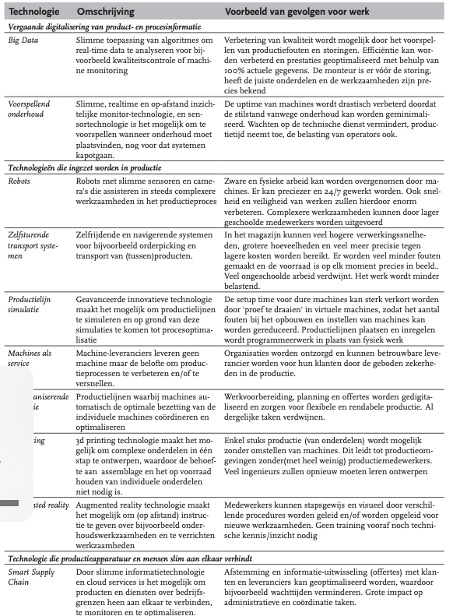Week 3 - smart research: processen
Voorbereiding
Tijdens mijn studie technische bedrijfskunde ben ik al vaak in aanraking gekomen met procesoptimalisatie. Zo heb ik meerdere projecten uitgevoerd om processen binnen industriële bedrijven te optimaliseren. Vaak ging dit over het reduceren van de doorlooptijd, omsteltijd en stilstand van de machines. Ook hebben wij veel colleges gekregen over het “Lean” maken van een organisatie en zijn thema’s als Quick Response Manufacturing (QRM) one-piece-flow productie, etc. bekend. Daarnaast heb ik nog mijn greenbelt certificaat behaalt tijdens mijn stage. Hierbij moest ik minimaal een bedrag van 10.000 euro besparen in een half jaar tijd. Ook heb ik nog extra vakken moeten volgen voor het behalen van dit certificaat.
Procesoptimalisatie
Voor procesoptimalisatie wordt door technisch bedrijfskundige vaak eerst breed gekeken naar het proces. Vervolgens wordt door kwalitatief onderzoek gekeken waar de grootste verspillingen zitten binnen een proces. Vaak wordt dit gedaan aan de hand van interviews met medewerkers uit verschillende lagen van de organisatie. Deze interviewvragen worden opgesteld aan de hand van de acht verspillingen van TIMWOODS:
Uiteindelijk wordt middels de interviews achterhaald welke soort verspilling het meeste aan orde is. Vervolgens kan er doorgevraagd worden met de 5-times-why methode om de grondoorzaak van het probleem te achterhalen. Dit probleem wordt dan zoveel mogelijk kwantitatief gemaakt door middel van data of metingen. Op deze manier kan het probleem in cijfers uitgedrukt worden en is de impact van het probleem beter zichtbaar. Vervolgens wordt gezocht naar ideeën en wordt in overleg met de belangrijkste stakeholders bepaald welke oplossing het beste is op het probleem te verhelpen. Tot slot wordt de oplossing geïmplementeerd en worden opnieuw de resultaten vergeleken met de oude situatie. Middels de PDCA-cyclus wordt vaak gekeken hoe de oplossing verloopt en of er bijgestuurd moet worden.
Gevonden artikelen procesoptimalisatie
Uit een onderzoek van Thomas Uhlemann, Cristian Lehmann en Rolf Steinhilper blijkt dat bedrijven eerst een geschikt geautomatiseerd productiesysteem moeten hebben voordat het verbeteringen door kan gaan voeren. Er dient een database opgesteld te worden waarbij overal in het bedrijf real-time data beschikbaar moet zijn en hier moet op geschakeld kunnen worden. Het gebruik van volledige data-acquisitie van procesdata (sleutelelement industrie 4.0), en bij kwantificering, evaluatie en analyse van verzamelde data, moeten tekortkomingen meteen worden vastgesteld. Ook is het op deze manier mogelijk om een digital twin te maken van het proces. (Uhlemann, Lehmann, & Steinhilper, 2017)
Ook worden technologieën als cloud computing, big data, additive manufacturing, artificial vision en augmented reality steeds belangrijker voor het verbeteren van processen en het waarde toevoegen aan producten. Met deze elementen kunnen kosten reductie worden gerealiseerd, tijdwinst worden behaald, fouten worden opgespoord en medewerkers op een slimme manier getraind worden. (Ibarra, Ganzarain, & Igartua, 2017)
Ook bevestigen andere artikelen dat Lean nog steeds een belangrijk begrip is voor procesoptimalisatie. Met dit thema heb ik heel mijn opleiding al gewerkt en hierdoor beschik ik al over de nodige kennis.
Risicomanagement
Bij risicomanagement wordt gekeken naar welke risico’s een bedreiging kunnen gaan vormen voor een bedrijf of project. Tijdens onze studie hebben we hier minder over uitgelegd gekregen. Wel is tijdens projecten gekeken welke risico’s het project of het bedrijf in de weg konden staan. Vaak werden de risico’s dan samen met de stakeholders beoordeeld door middel van een keuzematrix. De risico’s met de hoogste score waren de belangrijkste risico’s die meegenomen moesten worden tijdens het project.
gevonden artikelen
Een geaccepteerde strategie die essentieel is voor de beheersing van risico’s wordt risicomanagement genoemd. Onder dit worden alle activiteiten verstaan voor het controleren van risico’s. Met dit proces kunnen risico’s geïdentificeerd worden en hierdoor kunnen methodes toegepast worden om de risico’s te reduceren tot een acceptabel niveau. In werkelijkheid blijkt dat het bijna onmogelijk is om alle risico’s te elimineren, wel kunnen deze zoveel mogelijk gereduceerd worden. uiteindelijk dienen er drie stappen doorlopen te worden:
- Risico inschatting
- Risico reducering
- Toepassen en evaluatie
Risicomanagement bevat meer dan enkel deze drie stappen en het is een cyclish proces, zoals onderstaand figuur weergeeft. (Peters, 2017)
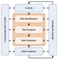
“Een belangrijk onderdeel van risicomanagement is het hebben van een doorlopend proces bestaande uit communiceren en consulten én monitoren en evalueren. Op dit moment wordt vaak wel geprobeerd risico’s goed te managen, maar gebeurt dit zelden systematisch.” (Tularam & Attili, 2012)
Weekopdracht week 3
Deze week dient er meer onderzoek gedaan te worden naar smart industrie in termen van Lean en Agile. Dit zijn twee belangrijke termen geworden binnen smart industrie en hierdoor is het belangrijk om verdieping te zoeken in deze termen. Tijdens mijn studie technische bedrijfskunde heb ik al veel kennis opgedaan met betrekking tot Lean. Tijdens mijn stage heb ik ook mijn Lean Six Sigma Greenbelt certificaat behaald. Over Agile heb ik minder kennis. Om tot goede wetenschappelijke inzichten te komen ben ik gaan zoeken naar artikelen op Google Scholar of Kaluga. Hierbij ben ik gaan zoeken op termen als:
Ook is hierbij gekeken naar de auteur en naar het jaartal van de bron. Enkel bronnen vanaf 2016 zijn meegenomen in dit artikel om op de hoogte te blijven van de actuele en toekomstige informatie over deze termen. Daarnaast is gekeken naar de auteur en de bronnen die zijn gebruikt in het verslag. Ook is gekeken van welke site de artikelen af komen. De meeste bronnen komen van de betrouwbare site Sciencedirect. Vaak hadden de auteurs die zijn gebruikt meerdere artikelen geschreven over deze thema’s en is het doel van de artikelen lezers van informatie voorzien van het belang van Lean en Agile. Onderstaand de resultaten van mijn onderzoek naar deze termen met betrekking tot smart industry.
Lean smart industry
Binnen industriële bedrijven wordt Lean production algemeen erkend en geaccepteerd. Lean production betreft een strikte integratie van mens en productieproces, continue verbetering en focus op waarde toevoegden activiteiten door verspillingen te elimineren of vermijden. Inmiddels is de vierde industriële revolutie opgedoken, genaamd industry 4.0. Deze revolutie maakt het mogelijk om een slim netwerk van machines, componenten, producten, individuen en ICT-systemen te creëren in de hele waardeketen om een slimme fabriek te realiseren. Lean maakt het mogelijk om deze slimme fabriek te stimuleren. De volgende onderdelen van Lean en industry 4.0 hebben betrekking op elkaar: (Mrugalska & Wyrwicka, 2017) (Sanders, Elangeswaran, & Wulfsberg, 2016)
Smart product
Kaizen dat onder andere de weg vrij maakt voor een Lean journey, kan smart products verzamelen en gebruiken voor analyse van informatie over herhalende acties van sensor- en semantische technologieën. Deze smart products hebben unieke eigenschappen zoals: Contextbewust, adaptief, zelfgeorganiseerd, proactief en het vermogen om de hele levenscyclus te ondersteunen, waardoor het een continue verbeterproces heeft. Bovendien maken de gegevens hiervan visualisatie van het productieproces en informatiestroom van productgroepen mogelijk. Op deze manier is het mogelijk om een current state map te creëren die verspilling in bepaalde processen aantoont en toekomstige strategische activiteiten toewijst om verspillingen te elimineren. Daarnaast kan een slim product kanban-informatie bevatten om controle van het productieproces te waarborgen. Dit is ook al gepresenteerd op de SmartFactoryKL op de Hannover Messe in Duitsland. (Mrugalska & Wyrwicka, 2017)
Smart machine
Een slimme machine kan een smart panel bevatten, bijvoorbeeld Advan panel 37. Dit maakt het mogelijk om kanban-kaarten in realtime te detecteren. Er zijn nog veel meer mogelijkheden met slimme machines. Het belangrijkste is dat smart machines gegevens verzamelen met technologieën als actuatoren, sensoren en videos. Deze realtime gegevens kunnen geanalyseerd en gebruikt worden voor betere operationele intelligentie te geven aan het proces en machines, maar ook voor het voorkomen van fouten wat het belangrijkste idee is van Poka Yoke. Tot slot maakt de toepassing van Plug’n’Produce het ook mogelijk om de Single Minute Exchange of Die-methode (SMED) in de hele productielijn te introduceren. (Mrugalska & Wyrwicka, 2017)
Augmented operator
De augmented operator moet ervoor zorgen dat de tijd tussen het optreden van een storing en het melden van een storing zoveel mogelijk verkort wordt. Om dit te kunnen realiseren, dient de Andon-methode te worden toegepast. Dit is een van de belangrijkste elementen van de Jidoka-kwaliteitscontrole, een belangrijk onderdeel van de Lean aanpak. Dit kan gerealiseerd worden door signaallichten te tonen op een smartwatch van een operator die in connectie staat met machines. Deze informatie gaat zowel over foutmeldingen als foutlocaties die optreden. Foutmeldingen worden geregistreerd in een database en worden geanalyseerd als continue verbeterprogramma om fouten op te sporen. Bovendien kunnen storingen worden gedetecteerd met juiste sensoren en automatische foutherstelacties verhelpen het probleem zonder menselijke hulp. (Mrugalska & Wyrwicka, 2017)
Lean-productie heeft ervoor gezorgd dat kwaliteitsproducten worden gerealiseerd gericht op klanttevredenheid. Hierbij wordt alles wat geen waarde toevoegt aan het product gezien als een verspilling. Lean kan het antwoord zijn op grote flexibiliteit van productiesystemen en processen om complexe producten succesvol te produceren. Om dit te realiseren is het nodig om IT-integratie van het productie- en planningsniveau te introduceren. De drie eerder genoemde voorbeelden hebben de koppeling tussen Lean en smart industry zichtbaar gemaakt door verschillende Lean production principes te koppelen aan nieuwe technologieën. Dit maakte het ook duidelijk dat Lean en smart industry elkaar kunnen ondersteunen. (Mrugalska & Wyrwicka, 2017) (Sanders, Elangeswaran, & Wulfsberg, 2016)
Bij grote bedrijven als ASML, VDL, Van der Lande, etc. wordt Lean als basis gebruikt voor de productie. Deze bedrijven geven ook interne cursussen om medewerkers de Lean denkmethode aan te leren en hierdoor zijn deze bedrijven ook zo succesvol. Binnen
Door deze twee wetenschappelijke bronnen heb ik goed kunnen onderbouwen dat Lean en smart industrie belangrijk voor elkaar kunnen zijn en ondersteuning bieden. Beide bronnen zijn ook nog redelijk actueel en hebben betrouwbare auteurs. Daarnaast gaf het ook duidelijk antwoord op mijn zoektermen en werd de informatie verkregen die nodig was. Ook was het doel van beide artikelen de lezer te informeren over de koppeling tussen smart industrie en Lean.
Agile smart industry
Met de Agile softwareontwikkelingsmethoden wordt gepoogd een antwoord te bieden op het bedrijfsleven dat vraagt om snellere en wendbare software processen. Dit is voornamelijk het geval bij de groeiende internetsoftware branche en mobiele applicatie omgeving. De SCRUM methode wordt vaak gebruik bij Agile, waarbij in korte sprints projecten en opdrachten worden uitgevoerd. Bij SCRUM wordt continue het resultaat besproken met de klant en kunnen aanpassingen tijdens het project nog verwerkt worden. Ook door de snelle vooruitgang van de industrie, technologie en toepassingen zijn veel nieuwe concepten ontstaan in de productie. Agile staat voor wendbaar, flexibel en lenig en is een manier van denken, werken en organiseren. Het wordt een steeds populairdere manier om in te spelen op de snel veranderende buitenwereld. Hierbij staat de klanttevredenheid voorop, met daarbij ook nog oog op het welzijn van werknemers en gezonde bedrijfsresultaten. (Faber, Mendez, Rehm, & Matthes, 2018) (Qin, Liu, & Grosvenor, 2016)
De vier kernwaarden van Agile zijn:
Agile stelt twaalf principes om tot succes te komen:
- Tevreden klant heeft prioriteit
- Verwelkom een flexibele scope
- Lever werkende onderdelen op in korte cycli
- Dagelijks multidisciplinair samenwerken
- Motiveer medewerkers, geef support en vertrouwen
- Face-to-face informatie overdracht
- Werken product als indicator van vooruitgang
- Constant innovatietempo
- Aandacht voor hoge kwaliteit
- Houd dingen waar mogelijk simpel
- Werk in zelforganiserende teams
- Reflecteer op de samenwerking
Twee jaar geleden zijn we met de studie technische bedrijfskunde gaan kijken bij het bedrijf Hoppenbrouwers B.V. in Berkel-Enschot, wat al jaren met Agile en Scrum werkt. Hierbij worden grote projecten opgedeeld in kleine stappen, waarbij wekelijks de voortgang en het resultaat besproken wordt met de klant. Dit bedrijf kan ook snel wijzigingen aanbrengen aan het project doordat het werkt met deze methoden.
Agile heeft zeker een relatie met smart industrie. In de snel veranderende wereld van de vierde industriële revolutie is het nodig om bij te blijven met de veranderingen en vaak complexe en klant specifieke klantwensen. Door de Agile methoden zijn bedrijven in staat om hier op in te spelen en wordt de klant altijd voorop gesteld.
Ik heb tot slot mijn opdracht laten reviewen door Derk. Hierbij kreeg ik de volgende opmerkingen en heb ik dit opnieuw verwerkt in me rapport.
Week 4 - smart research: Value proposition
In deze weekopdracht is meer onderzoek gedaan naar het co-design principe. Om meer kennis te vergaren over dit thema zijn twee YouTube video’s bekeken over dit onderwerp en verder is nog onderzoek gedaan naar wetenschappelijke bronnen. Bij de wetenschappelijke artikelen is gezocht op zoekmachines als Google Scholar en Kaluga. Hierbij zijn de volgende trefwoorden gebruikt:
Om alleen geschikte bronnen te onderzoeken is gekeken naar de volgende criteria:
In het verleden werden producten en services vaak enkel ontworpen door specialisten en individuen. Hierbij werd door deze specialisten vaak bepaald wat de (toekomstige) behoefte is van de consument. In de huidige tijd waar de mensheid in leeft, is het bijna niet meer mogelijk om deze aanpak te hanteren. Klanten worden steeds kritischer, er zijn meer mogelijkheden en de behoefte/smaakt verandert enorm snel. Hierbij komt het co-design principe om de hoek kijken. Co-design staat voor het gezamenlijk verkennen en ontwerpen van producten/services in multidisciplinaire teams om tot een geschikte oplossing te komen. (Blomkamp, 2018) (Barbera, Garcia, & Fuertes-Alp, 2017)
Deze methode van ontwerpen zorgt ervoor dat op een creatieve manier consumenten en belanghebbende betrokken worden bij het vinden van een oplossing voor complexe problemen of het ontwerpen van een product/service. Co-design wordt geprezen als een methoden om innovatieve ideeën te genereren en te zorgen dat beleid- en diensten aansluiten op de behoefte van de consumenten. (Vink, Wetter-Edman, & Edvardsson, 2016)
Co-design kan op verschillende vraagstukken worden toegepast. Zo wordt onderstaand in drie voorbeelden toegelicht wat het effect was van co-design op de processen.
Co-design met ouderen voor ontwikkeling van gezondheidszorgdiensten
In dit project in de gezondheidszorgsector was het doel om oudere mensen te helpen beter deel te nemen aan hun sociale netwerken. Met het co-design principe werd de leefstijl, dagelijkse bezigheden en capaciteiten van ouderen achterhaald om vervolgens een oplossing te vinden voor dit probleem. In de eerste fase van het proces zijn interviews afgenomen met personen tussen de 55 en 99 jaar oud om de informatie te vergaren van het dagelijks leven. In de tweede fasen is een deel van onderzochte groep gevraagd de dagelijkse routines op te schrijven gedurende vier weken. In de laatste fase is een deel van de groep uitgenodigd om deel te nemen aan de co-design workshop om te valideren of de gerapporteerde bevinden juist waren en om te identificeren op welke manier de ouderen graag ondersteund worden om deel te nemen aan sociale netwerken.
Door het co-design principe zijn de ouderen veel betrokken in het proces en kon een gepaste oplossing bedacht worden voor het sociaal netwerken van ouderen. Er werden nieuwe ideeën gegenereerd door ouderen, bestaande ideeën en informatie werd bevestigd en doordat ouderen onderdeel waren van dit proces werd de oplossing ook overtuigender voor de buitenwereld. Onderstaande figuur weergeeft een deel van het idee. (Steen , Manschot, & de Koning, 2011)
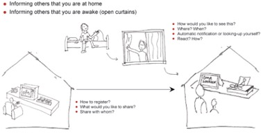
Co-design met kinderen om ideeën te genereren voor een nieuwe telecom service
In deze casus betreft het een telecommunicatiebedrijf dat opzoek was naar meer creativiteit en innovatie van de afdeling en het bedenken van een nieuwe business. Hierbij is het idee middels co-design kinderen te betrekken in dit proces van innovatie. Kinderen kunnen meer out-of-the-box denken dan volwassenen wat vaak resulteert in nieuwe ideeën. Deze kinderen moesten de huidige werknemers voorzien van meer creativiteit en inzichten om een nieuwe business te starten.
Er zijn drie workshop georganiseerd met 50 kinderen tussen de 7 en 10 jaar oud. Deze kinderen gingen samenwerken met een begeleider in groepen van vier personen. De kinderen mochten hierbij zelf ideeën gaan bedenken en dit mochten ze in elkaar knutselen. Vervolgens mocht het idee gepresenteerd worden door middel van een video opnamen. De acht beste ideeën zijn geselecteerd voor de oprichting van een nieuw bedrijf op korte termijn. Dit waren ideeën als een fotolijst voor videocommunicatie, apparaat om gezamenlijk muziek te maken vanaf verschillende locaties en een mobiele buddy-finder. Daarnaast zijn er ideeën gegenereerd voor lange termijn, zoals een draagbare translater, apparaat om dingen aan te raken op andere locaties, een kussen dat fijne dromen realiseert.
Het doel van het co-design project was geslaagd. Kinderen hadden goede ideeën bedacht die als innovatief en creatief beoordeeld werden. Ook hebben de medewerkers veel kunnen leren van de denkwijze van kinderen om nieuwe ideeën te bedenken. (Steen , Manschot, & de Koning, 2011)
Co-design met medewerkers om de logistieke service te verbeteren
In dit voorbeeld gaat het over het verbeteren van de klantenservice. Hiervoor is gebruik gemaakt van het co-design principe, waarbij medewerkers van verschillende afdelingen en roots betrokken waren. Daarnaast was het belangrijk dat verschillende medewerkers kennis gingen maken met het co-design principe voor toekomstige projecten. Om de klant ervaring te achterhalen is gebruik gemaakt van de Customer Journey methode.
Als eerste werden de klantervaringen achterhaald en werd gekeken hoe klanten bij het bedrijf terecht kwamen. Dit bleek echter moeilijker dan verwacht, omdat slechts een enkeling een overzicht had van de klantervaring. In samenwerking met meerdere service managers is een systeem ontwikkeld om de klant zijn ervaring te meten en data te verkrijgen.
Op basis van deze gegevens kon een nieuw ontwerp gemaakt worden om het klantenproces te verbeteren. De medewerkers moesten hetzelfde pad gaan belopen om te kijken wat een klant ervaart. Het gevolg hiervan is dat de medewerkers dezelfde emoties gaan voelen als de klanten, waardoor de urgentie hoger wordt om te gaan innoveren en verbeteren. Hierbij werd met het co-design principe een workshop georganiseerd met alle betrokkenen, van callcentermedewerkers tot productmanagers. In deze sessie is gezamenlijk een verbeterde Customer Journey ontworpen, die verder werd ontwikkeld in kleine werkgroepen. Deze oplossing biedt klanten een tool waarmee de klant makkelijk een postbus kan vinden. Uiteindelijk heeft deze oplossing geresulteerd in een verbeterde klanttevredenheid en werd het zelfs geadviseerd aan andere door middel van mond-tot-mondreclame. Daarnaast leerde het team met meerdere disciplines samen te werken, wat veel voordeel heeft voor de toekomst. (Steen , Manschot, & de Koning, 2011)
Uit deze voorbeelden is gebleken dat co-design een positieve invloed heeft op processen en dat het vele voordelen kent. De volgende voordelen zijn nog gevonden:
Co-design zal steeds belangrijker worden voor de toekomst en in de smart industrie. Het is makkelijker om klantwensen te achterhalen, door de klanten te betrekken in het proces. Daarnaast wordt in multidisciplinaire teams samengewerkt wat vaak resulteert in een betere oplossing.
Naast het opzoeken van informatie over co-design is een interview gehouden met een medestudent van de minor Smart Industrie, genaamd Emiel de Valk. Hierbij dient een interview afgenomen te worden om te kijken over welke kennis de medestudent al beschikt. Hierbij zijn de volgende twee vragen opgesteld:
Waarom is het co-design principe beter dan de oude manier van ontwerpen? Wat is het verschil precies en wat maakt co-design zo onderscheidend?
Wat het is het belang van co-design met betrekking tot smart industrie?
Tijdens dit interview heeft ook Emiel mij vragen gesteld om te achterhalen over welke kennis ik beschik met betrekking tot co-design. Het interview is onderstaand te beluisteren.
Week 5 - smart resarch: organisatie en keten
De opdracht voor deze week was onderzoek doen naar het platform business model. Om meer kennis te vergaren over dit thema is een artikel gelezen van IPPR over dit onderwerp en verder is nog onderzoek gedaan naar wetenschappelijke bronnen. Bij de wetenschappelijke artikelen is gezocht op zoekmachines als Google Scholar en Kaluga. Er is gebruik gemaakt van deskresearch. Hierbij zijn de volgende trefwoorden gebruikt:
Om alleen geschikte bronnen te onderzoeken is gekeken naar de volgende criteria:
Er zijn steeds meet verschillende business platforms te vinden binnen de nieuwe samenleving. De nieuwste technologische ontwikkelingen hebben de opkomst van nieuwe bedrijfsmodellen op basis van digitale platforms mogelijk gemaakt. Platforms zijn bedrijfsmodellen die bestemd zijn voor het samenbrengen van verschillende groepen. Google en Facebook zijn platforms bestemd voor het samenbrengen van adverteerders, bedrijven en dagelijkse gebruikers van social media. Uber brengt autorijders/chauffeurs in contact met mensen die een taxi nodig hebben. Amazon en Siemens bouwen platform infrastructuren die ten grondslag liggen aan de huidige economie en Airbnb en Booking brengen mensen in contact met accommodaties om te huren. Een essentieel punt is de centrale plaats van data die de basisbron vormen voor platformen en het een voorsprong kan geven op concurrenten. Deze platformen zijn ontworpen om deze gegevens de extraheren en te gebruiken. Dit wordt gedaan door de infrastructuur en bemiddeling tussen verschillende groepen te bieden, waarbij interacties tussen groepen gevolgd en geëxtraheerd kunnen worden. Deze positie is de bron van hun economische groei en politieke macht. (IPPR, 2017) (Täuscher & Sven M. Laudien, 2018) (Laine, Alhava, Peltokorpi, & Seppänen, 2017)
Gegevens en data zullen de centrale bron worden voor zowel technische als niet-technische sectoren in de economie. Het wordt belangrijk om deze informatie snel over te hevelen en samen te voegen. Platformen bieden een geschikte oplossing voor dit probleem. Zo kunnen diensten/producten verbetert worden door de grote hoeveelheid data die binnen komt. John Deere heeft een platform laten ontwikkelen dat boeren, zaadproducenten, tractoren, etc. met elkaar verbindt om diensten als zaai en oogstperiodes te verbeteren of slijtage van tractoren te minimaliseren. Hiermee heeft het bedrijf concurrentievoordeel behaald. (IPPR, 2017)
Toch hebben de veranderingen van business platforms schandelijke gevolgen. De drang naar steeds meer gegevens gaat ten koste van de privacy van gebruikers, wat kenmerkend is voor platformkapitalisme. Platforms willen steeds meer gegevens, wat resulteert in een drijfveer om de grenzen op te zoeken met betrekking tot privacy. Google is terechtgewezen voor het verzamelen van Wifi-gegevens, Facebook wordt bekritiseerd omdat het te ver in het leven van burgers duikt en Visio is aangeklaagd wegens het bespioneren van mensen via smart tv’s. Zolang data de centrale bron is en kapitalistische concurrentie een hoge premie hecht aan het verzamelen van data, blijft de toekomst gevuld met privacy schandalen. (IPPR, 2017)
Doordat grote bedrijven als Google, Amazon en Facebook zo hard aan het groeien zijn en blijven uitbreiden in nieuwe gebieden, wordt het steeds moeilijker voor startende ondernemers in dataextractie om succesvol te worden. Deze worden vaak meteen opgekocht door de eerder genoemde bedrijven. Zelfs grote bedrijven als Twitter, LinkedIn worden data-eetlust voor grote platforms. Het zegt genoeg dat Google investeert in niet gerelateerde ondernemingen zoals zelfrijdende auto’s of Internet of Things. Dit wordt enkel gedaan om nieuwe manieren te vinden om gegevens te extraheren. Naar verwachting zal de agressieve concurrentie tussen de grote platforms enkel blijven toenemen komende jaren en wordt het vrijwel onmogelijk voor nieuwe concurrenten om de markt te betreden. (IPPR, 2017)
Naast deze informatie is ook informatie verkregen via het kijken van een documentaire op Netflix. Deze documentaire genaamd social dilemma geeft meer informatie over hoe Google en Facebook de gevoelens van de mens probeert te beïnvloeden en hierop in te spelen. Hierbij vertellen oud medewerkers van Google en facebook hoe er misbruik wordt gemaakt van de gegevens die deze bedrijven over ons verkrijgen. Er wordt inzicht gegeven op welke manier bedrijven achter deze platformen de mensheid probeert te beïnvloeden. De hoeveelheid data die omgaat tijdens het gebruik van deze platformen wordt weer ingezet om gerelateerde reclames en berichten te koppelen aan gebruikers. Platformen proberen de gebruikers zo verslavend mogelijk te maken, zodat ze lang actief blijven op deze kanalen. Google en Facebook verkoopt de gebruikers aan adverteerders als verdienmodel en proberen ervoor te zorgen dat de gebruikers zo lang mogelijk actief blijven op deze platforms om meer geld te verdienen. (Orlowski, 2020)
Om een succesvol platform business model te realiseren zijn er een aantal basisregels:
Een groot onderdeel van smart industrie zijn technologische ontwikkelingen als big data en kunstmatige intelligentie. Bij platformen als Google en Facebook is terug te zien dat dit de belangrijkste succesfactoren zijn voor deze bedrijven. In de toekomst zal het platformkapitalisme enkel toenemen en wordt data voor deze bedrijven steeds belangrijker om de klant goed te kunnen voorzien en concurrentievoordeel te behalen.
Voor dit onderwerp heb ik een interview gehouden met Emiel de Valk om te achterhalen over welke kennis wij beschikken. Door middel van een soort kleine podcast wordt gediscussieerd over het onderwerp platform business model. Eerst hebben wij elkaars werk gereviewd en vervolgens zijn we hier vragen over gaan stellen. Als feedback voor mijn stukken kreeg ik het volgende:
Ik vond dat Emiel gelijk had op het gebied van de bronnen en hierdoor heb ik nog extra bronnen gezocht die mijn artikel konden bevestigen en uitbreiden. Het interview is onderstaand weergeven.
Om tot een goede analyse te komen is gebruik gemaakt van een kwalitatieve analyse die beschrijft wat het platform business model precies inhoudt en wat de invloed hiervan is op de samenleving. De complexe informatie uit wetenschappelijke artikelen is hierdoor op een prettig leesbare manier beschreven.
Door middel van een interessant en fijn leesbaar artikel wordt de communicatie gelegd met mijn lezers. Daarnaast blijkt uit onderzoek dat de populariteit van podcasts afgelopen jaren enorm is gestegen en dit enkel blijft toenemen. Al 5,3 miljoen Nederlanders luistert inmiddels al naar podcasts en hierdoor vond ik dit ook een geschikte manier om het onderwerp business platform verder toe te lichten.
Week 6 - smart research: smart factories/working
In deze weekopdracht dient onderzoek gedaan te worden naar cultuur met betrekking tot smart industrie. Om deze opdracht te kunnen maken is een artikel gelezen over cultuurcreatie en daarnaast is verder onderzoek gedaan naar dit thema door middel van wetenschappelijk onderzoek. Er dient een instrument ontwikkeld te worden waarmee een organisatie inzicht kan krijgen in hoeverre de bedrijfscultuur voldoet aan de ambities op het vlak van smart industrie. Dit instrument kan later gebruikt worden om de cultuur van de stakeholders van het project te meten. Het bedrijf waar het project uitgevoerd gaat worden heet InsectSense. Tijdens de gesprekken met stakeholders zal achterhaald worden wat voor cultuur er heerst in de organisatie.
Bij de wetenschappelijke artikelen is gezocht op zoekmachines als Google Scholar en Kaluga. Er is gebruik gemaakt van deskresearch. Hierbij zijn de volgende trefwoorden gebruikt:
Om alleen geschikte bronnen te onderzoeken is gekeken naar de volgende criteria:
Het opbouwen van een vertrouwenscultuur in een organisatie kan een sterke manier zijn om de prestaties van een bedrijf te verbeteren. Onderzoek van neurowetenschap toont aan dat wrijvingen vermindert worden en de relatie tussen collega’s bevordert wordt. Hierdoor kunnen organisaties high performance teams met veel vertrouwen creëren. Het realiseren van een goede bedrijfscultuur is daarom ook een van de belangrijkste succesfactoren voor een organisatie. (zak, 2018)
De cultuur van een organisatie heeft invloed op het gedrag van medewerkers en de interacties tussen collega’s, wat weer invloed heeft op hoe efficiënt waarde gecreëerd wordt. Cultuur kan net als andere bedrijfsprocessen gemeten en verbeterd worden. Uit onderzoek is gebleken dat medewerkers verder willen gaan in hun rol als er een goede cultuur heerst in een organisatie. Ook blijkt dat vertrouwen tussen medewerkers resulteert in een efficiëntere werkwijze en medewerkers die goed kunnen samenwerken in teams. Dit alles resulteert in een hogere productiviteit en innovatieniveau. (zak, 2018)
Vertrouwen in een organisatie kan gemeten worden door middel van Oxytocin, een stofje dat vrijkomt in het brein en aanzet tot samenwerken. Helaas kan dit enkel gemeten worden door bloedafname, waar veel medewerkers niet aan zullen meewerken. Wel kan het door meerdere factoren toch nog meetbaar worden:
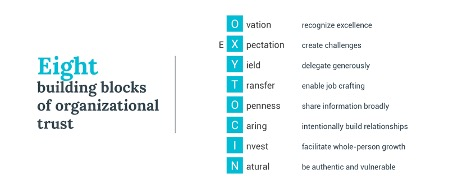
Deze acht componenten kunnen gebruikt worden om het vertrouwen en prestatieniveau te verbeteren. Zo blijkt uit een enquête dat door deze acht componenten de medewerkers meer energie hebben in het werk, zijn ze meer bezig met hun werk en gaat de productiviteit omhoog. Daarnaast neemt het aantal burn-out onder medewerkers verder af. Onderstaand figuur weergeeft de effecten van een goede cultuur in een organisatie. (zak, 2018)
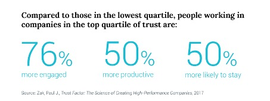
Een ander artikel over organisatiecultuur in de financiële sector geeft aan dat er meerdere factoren zijn die de cultuur kan verbeteren. Organisaties waar medewerkers zich niet veilig voelen om wat uit te spreken, de top van het management het foute voorbeeld geeft en kritische vragen achterwegen blijven, brengt risico’s mee op het gedrag van medewerkers. Het kan resulteren in ontevredenheid en dat medewerkers met minder enthousiasme naar het werk gaan. Daarnaast kan het negatieve gevolgen hebben richting de klanten. Door het in kaart te brengen van elementen die de organisatiecultuur verbeteren, zijn bedrijven in staat om deze elementen te stimuleren en de risicovol gedrag te voorkomen. Deze bouwstenen hebben een positief effect op het ethisch gedrag van medewerkers, betere dienstverlening naar de klant en het verhoogt de prestaties van de onderneming. Dit maakt het voor ondernemingen aantrekkelijk omdat het vanuit zowel bedrijfsmatig perspectief als ethisch perspectief gunstig is. onderstaande afbeelding weergeeft de boutstenen voor een gezonde organisatiecultuur. (Christensen, 2018) 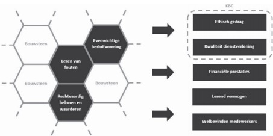
Evenwichtige besluitvorming
Wanneer er geen sprake is van evenwichtige besluitvorming kan dit leiden tot producten en diensten die niet leiden tot het belang van de klant. Zo kan het de klant en maatschappij een hoop problemen opleveren. Er dient een goede afweging gemaakt te worden over de belangen van de stakeholders, waar de klant een belangrijke van is. Door veel stakeholders te betrekken worden juiste beslissingen gemaakt waar het merendeel bij betrokken is. (Christensen, 2018)
Rechtvaardig belonen en waarderen
Het beloningsbeleid wordt gezien als een van de belangrijkste elementen in het creëren van een goede cultuur. Indien bedrijven medewerkers belonen door middel van salarisverhoging, bonussen, etc. kan het gedrag van medewerkers beïnvloeden. Dit kan zijn door targets te halen of goede handeling richting de klant. Als medewerkers ervaren dat onrechtvaardig beloond en gewaardeerd wordt kan dit resulteren in stress en afgunst. Deze bouwsteen kan simpel onderzocht worden door middel van vragenlijsten, interviews of de HR manager te informeren. (Christensen, 2018)
Leren van fouten
Binnen organisaties worden fouten vaak aangepakt, wat ten kosten gaat van het vertrouwen van de medewerkers. Het is belangrijk dat er geleerd wordt van fouten waardoor een open foutencultuur ontstaat. Hierbij worden fouten gecommuniceerd zodat alle medewerkers ervan kunnen leren. Medewerkers worden ook niet gestraft als er fouten worden gemaakt en durven dit in deze cultuur toe te geven. Vervolgend worden de fouten geanalyseerd en gecorrigeerd door het nemen van effectieve verbetermaatregelen. Dit draagt bij aan het lerend vermogen, ethisch gedrag, betere kwaliteit van dienstverlening en prestaties van een organisatie. Uit onderzoek is gebleken dat organisaties die open communiceren over fouten beter presteren. Het wordt binnen deze organisaties als “slim” gezien dat fouten worden toegegeven om zo de organisatie te verbeteren. (Christensen, 2018)
Om zelf de cultuur van een organisatie te meten kan gebruik worden gemaakt van de onderstaande tabellen.
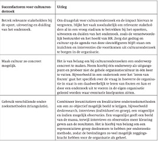
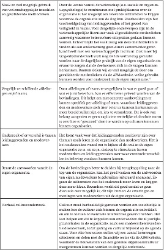
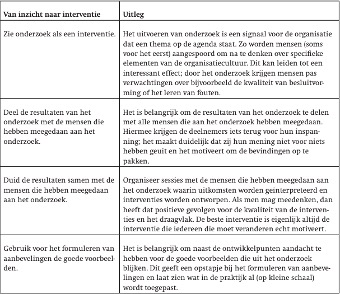
Met deze bouwstenen krijgt een bedrijf beter inzicht in het gedrag en cultuur van de organisatie. Hierdoor kunnen potentiële risico’s eerder herkent en verkleint worden om problemen te voorkomen. Het heeft een positief effect op de organisatie en medewerkers waardoor een gezonder organisatiecultuur heerst in het bedrijf. (Christensen, 2018)
Binnen smart industrie is het belangrijk dat medewerkers open staan voor verandering door de snelle ontwikkelingen van technologie. Medewerkers binnen bedrijven moeten om kunnen gaan met veranderingen en open staan om te blijven leren. Het zou kunnen zijn dat medewerkers door middel van automatisering andere soort functies krijgen en hier moet een goede organisatiecultuur heersen om de medewerkers te blijven motiveren voor verandering. (Govert Gijsbers, 2016)
Portfolio Smart business
Week 1 Smart business: smart working
De voorbereiding voor deze les was het opstellen van vragen die ik aan medestudenten kan stellen. Op deze manier wordt achterhaald wat medestudenten verwachten te gaan leren tijdens deze minor en wat de waarde van hen gaat zijn. De volgende vragen zijn opgesteld:
Door middel van het value proposition canvas (VPC) is duidelijk gemaakt wat de minor moet gaan brengen. Onderstaand is de VPC weergeven.
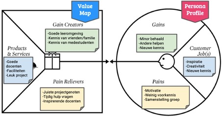
Aan de rechterkant staat beschreven wat de minor moet gaan brengen en wat nodig is voor de minor. De linkerkant beschrijft hoe de minor gerealiseerd gaat worden en welke producten/service ervoor zorgt dat de customer jobs behaald gaan worden.
Week 2 Smart business: smart products klant
In deze week wordt de kennis vergroot op het gebied van Business Model Canvas (BMC), design thinking, veranderplan en businesscase.
Voorbereiding
Het Internet of Things (IoT) is het dagelijkse leven van consumenten binnen gedrongen en heeft al bedrijfsmodellen in verschillende sectoren getransformeerd. Deze technologische ontwikkeling biedt kansen voor verzekeraars. Door het IoT worden verzekeraars in staat gesteld om nieuwe producten te ontwikkelen, nieuwe distributiekanalen te openen en hun rol uit te breiden met voorspellingen, preventie en assistentie. Bijna alle apparaten zullen verbonden zijn door de veranderingen van het IoT. In 2010 waren er 12,5 miljard apparaten opgenomen in het IoT. De verwachting is dat dit aantal in 2025 opgelopen is tot 50 miljard apparaten die verbonden zijn (mckinsey, 2019). Deze apparaten kunnen enorme hoeveelheden aan data en gegevens overdragen aan leveranciers of derden.
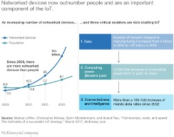
Tot nu toe hebben verzekeraars IoT mogelijkheden om interactie met klanten te ondersteunen en acceptatie en claimverwerkingen te versnellen/vereenvoudigen. Echter ontstaan er steeds meer IoT servicemodellen die interessant zijn voor verzekeraars. Zo zouden ze kunnen samenwerken met bedrijven om nieuwe of verbeterde producten en diensten te kunnen leveren die gebruik maken van ITS-technologieën en nieuwe ecosystemen. Hierdoor kan aanvullende business worden gegenereerd:
Verzekeraars kunnen door IoT technologieën steeds nauwkeuriger de risico’s bepalen. Autoverzekeringen kijken naar factoren als leeftijd, adres, krediet, etc. bij het vaststellen van premies. Door IoT komen er nieuwe factoren bij kijken die gebruikt kunnen worden door verzekeraars. Hierbij kan zelfs inzicht verkregen worden in de rijstijl van een vervoerder. Factoren als snelheid, welk dagdeel gereden wordt, etc. om een beter inzicht te krijgen in de verzekerde.
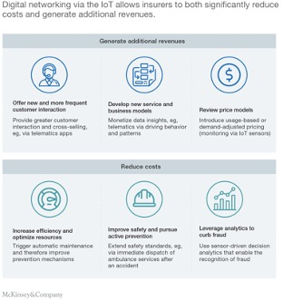
Door de hoeveelheid data die verkrijgbaar is door slimme apparaten kunnen verzekeraars beter inzicht krijgen in de klanten en hoe de apparaten gebruikt worden. Hierdoor kunnen kostenreducties gerealiseerd worden en nieuwe businessmodellen op afgestemd worden.
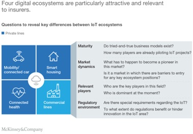
Weekopdracht AXA
Tijdens dit college was er een gastspreken van het bedrijf Informed. Dit bedrijf had een klant genaamd AXA waar het financieel niet zo goed ging met de WA-verzekeringen. Tijdens deze les hebben wij een casus gekregen van dit bedrijf en dit mochten wij in groepen van vijf personen uitwerken. Om te beginnen is een Business Model Canvas (BMC) opgesteld om het bedrijf beter in kaart te brengen. Onderstaand is het huidige BMC weergeven van AXA.
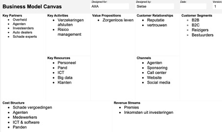
In de casus werd verteld dat het bedrijf verlies maakt op de WA-verzekeringen. De reden hiervan was dat de overheid een maximum stelt op premies, er vaak fraude wordt gepleegd en dat het lastig te beoordelen is hoe iemand anders rijgedrag is. Er werd gevraagd een oplossing te bedenken, zodat de WA-verzekeringen weer interessant worden om te verkopen. Door een creatieve brainstrom sessie zijn de verschillende ideeën gegenereerd. Hierbij zijn de volgende twee oplossingen bedacht:
Nieuwe BMC
Het BMC zal niet drastisch veel veranderen op het gebied van de bouwstenen. Wel komen er een aantal nieuwe kostenposten bij voor de app en database om fraude te bestrijden en de apparaten die aangebracht moeten worden onder de auto’s van de verzekerde. Wel zullen de kosten structuur en inkomstenbronnen er anders uit gaan zien. Zo zullen de kosten van schadevergoedingen gaan dalen, omdat het bedrijf zoveel mogelijk verzekerde krijgt met goed rijgedrag. Wel zullen er ook veel klanten weg gaan bij AXA, doordat de premie hoog wordt bij asociaal rijgedrag. Echter kosten deze klanten AXA alleen maar geld en is het niet erg dat deze niet behouden worden.
veranderplan
De organisatie van AXA zal er wel anders uit gaan zien na de implementatie van oplossing 1. Het bedrijf zal partners moeten vinden die deze beacons kan maken en plaatsen. Daarnaast geven klanten een deel van hun privacy weg bij het laten aanbrengen van deze beacon. Ook dit dient goed uitgezocht te worden voordat het bedrijf hiermee in de problemen kan gaan komen. Tot slot zullen functies gaan veranderen of komen er vacatures vrij voor data analisten. Het gaat belangrijk worden dat de data wordt geanalyseerd en terug gekoppeld wordt naar de klant, zodat deze een eerlijk prijs betaald voor de verzekering. Klanten met roekeloos rijgedrag zullen een hoge premie betalen en hiermee gaat het bedrijf in gesprek. AXA kan zo zelf gaan selecteren welke klanten het verbonden wil houden en van welke klanten het afscheid moet nemen.
Businesscase
Door middel van een businesscase zal de oplossing uitgewerkt worden. Op deze manier kan AXA zien of het financieel interessant is. Afgelopen jaar had AXA een omzet van iets meer dan 100 miljard euro.
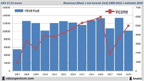
In dit businessplan wordt uitgegaan dat de WA-verzekeringen 10% van deze omzet op zich neemt. Dit komt neer op ongeveer 10 miljard euro. Onderstaand wordt de huidige situatie in kaart gebracht en worden drie mogelijke scenario’s bepaald. Door ervoor te zorgen dat de klanten van AXA goed rijgedrag vertonen, zullen er minder ongelukken gebeuren en worden minder schadeclaims ingediend. Op deze manier wordt het voor AXA weer interessant om WA-verzekeringen te verkopen. Verwacht is dat er weer 1 miljard wordt verdiend op deze verzekeringen.
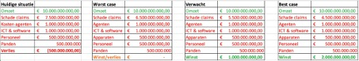
I'm in Connection
I'm in Technology
I'm in Project